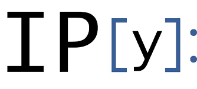

<!DOCTYPE html>
<html lang="en">
<head>
    <meta charset="UTF-8">
    <meta name="viewport" content="width=device-width, initial-scale=1.0">
    <title>Document</title>
    <link rel="stylesheet" href="https://fonts.xz.style/serve/inter.css">
	<link rel="stylesheet" href="https://use.fontawesome.com/releases/v5.8.1/css/all.css" integrity="sha384-50oBUHEmvpQ+1lW4y57PTFmhCaXp0ML5d60M1M7uH2+nqUivzIebhndOJK28anvf" crossorigin="anonymous">
    
    <link rel="stylesheet" href="https://cdn.jsdelivr.net/npm/@exampledev/new.css@1.1.2/new.min.css">
    <script type="text/x-mathjax-config">
        // only process math in math tags (faster and less false positive with `...`)
        MathJax = {
          options: {
            ignoreHtmlClass: 'tex2jax_ignore',    //  class that marks tags not to search
            processHtmlClass: 'tex2jax_process',  //  class that marks tags that should be searched
          }
        };
        MathJax.Hub.Config({tex2jax: {inlineMath: [['$','$'], ['\\(','\\)']]}});
    </script>
    <script type="text/javascript" async
        src="https://cdnjs.cloudflare.com/ajax/libs/mathjax/2.7.7/MathJax.js?config=TeX-MML-AM_CHTML">
    </script>
<style>
body{
    font-family: 'Roboto', 'Helvetica Neue', 'Helvetica', 'Arial', sans-serif;
    color: #606c76;
    font-weight: 350;
    line-height: 1.6;
    max-width: 1000px;
    margin-left:0;

}
          .foo:hover{text-decoration:underline}
          .foo{font-weight:bold; color:#4e4e4e}
          .exists{font-weight:bold; color:#4e4e4e;text-decoration:none;}
          .local{font-weight:bold; color:#1e6f04;text-decoration:none;}
          .exists:hover{text-decoration:underline;color:black}
          .missing,.missing:hover{color:darkred;text-decoration:none;font-weight:normal}
          .signature {font-size:100%; margin-bottom: 2rem; display: block; border:none; background-color: #FFFFFF;
              font-weight:600;}
          h1, h2, h3 {color: #4e4e4e; font-weight:400;
              margin-bottom: 1rem;border-bottom: 1px solid var(--nc-bg-3);
          }
          pre{border-radius:0;
              padding:0.6rem;
          border-left: 3px solid #AAA}
          dt {font-weight: 400;}

          header{
              box-shadow: rgba(0, 0, 0, 0.24) 0px 3px 8px;
              
              padding-top:0rem;
              padding-bottom:0rem;
              z-index: 2;
              padding-left: 0;
              position: fixed;
              top: 30px;
              left:0; 
              width: 100%;
              backdrop-filter: blur(5px);
              background-color: rgba(255, 255, 255, .15);
          }
          dd::before {
            content: '';
          }
          header > brand, header>:first-child {
              border-right: 1px solid #ccc;
              border-left: 1px solid #ccc;
              padding: 16px;
              padding-top: 0.5rem;
              padding-bottom: 0.5rem;
              display: inline-block; 
              width: 167px;

          }
          brand > a {color:#606c76}
          brand > i {
              padding-right: 0.5rem;

        }
          nav{display:inline;
          padding-left: 1rem;
          }

          dd {
              margin-left: 1rem;
              border-left:  solid #ddd;
              padding-left: 1rem;
          }
          summary > h2 { display: inline }

          .sidenav {
                height: 100%; /* Full-height: remove this if you want "auto" height */
                width: 200px; /* Set the width of the sidebar */
                position: fixed; /* Fixed Sidebar (stay in place on scroll) */
                z-index: 1; /* Stay on top */
                top: 0; /* Stay at the top */
                left: 0;
                background-color: var(--nc-bg-1);; /* Black */
                border-right: thin solid #ccc;
                overflow-x: hidden; /* Disable horizontal scroll */
                padding-top: 3rem;
 
                box-shadow: rgba(0, 0, 0, 0.24) 0px 3px 8px;
          }

          .sidenav a {
            padding: 6px 8px 6px 16px;
            text-decoration: none;
            color: #818181;
            display: block;
          }
          .sidenav img {
              width: 160px;
              padding-left:20px;
              padding-right:20px;
              border-bottom: solid thin #DDD; 
              padding-bottom: .5rem;
              max-width: 100%;
          }
          .sidenav i {
              font-size: 100;
              padding-left: 3.5rem;
              padding-right: 3.5rem;
              padding-bottom: .5rem;
              border-bottom: solid thin #DDD; 

          }
          .container {
              padding-left: 210px;
              padding-top: 30px;

          }

          ::selection {
	/* Set background color for selected text */
                background: #59b4fd;
                color: var(--nc-ac-tx);
          }

          img {max-width: 60%;}

          pre.highlight.execed {
            border-left: 3px solid #0070f3;
          }
          .note {color: #7d77d2}
          .warning {color: #f44336}
          pre.highlight.compiled {
            border-left: 3px solid #7d77d2;
          }
          pre.highlight.syntax_error, pre.highlight.exception_in_exec {
            border-left: 3px solid #f44336;
          }

        /* Dropdown Button */
/* The container <div> - needed to position the dropdown content */
.dropdown {
  position: relative;
  display: inline-block;
  margin-left: -4px;
}

/* Dropdown Content (Hidden by Default) */
.dropdown-content {
  display: none;
  position: absolute;
  background-color: #f1f1f1;
  min-width: 160px;
  box-shadow: 0px 8px 16px 0px rgba(0,0,0,0.2);
  z-index: 1;
}

/* Links inside the dropdown */
.dropdown-content a {
  color: black;
  padding: 12px 16px;
  text-decoration: none;
  display: block;
}

/* Change color of dropdown links on hover */
.dropdown-content a:hover {background-color: #ddd;}

/* Show the dropdown menu on hover */
.dropdown:hover .dropdown-content {display: block;
    max-height: 80vh;
    overflow: scroll;}

/* Change the background color of the dropdown button when the dropdown content is shown */
.dropdown:hover .dropbtn {}


pre { line-height: 125%; }
td.linenos pre { color: #000000; background-color: #f0f0f0; padding-left: 5px; padding-right: 5px; }
span.linenos { color: #000000; background-color: #f0f0f0; padding-left: 5px; padding-right: 5px; }
td.linenos pre.special { color: #000000; background-color: #ffffc0; padding-left: 5px; padding-right: 5px; }
span.linenos.special { color: #000000; background-color: #ffffc0; padding-left: 5px; padding-right: 5px; }
.highlight .hll { background-color: #ffffcc }
.highlight { background: #ffffff; }
.highlight .c { color: #888888 } /* Comment */
.highlight .err { color: #a61717; background-color: #e3d2d2 } /* Error */
.highlight .k { color: #008800; font-weight: bold } /* Keyword */
.highlight .ch { color: #888888 } /* Comment.Hashbang */
.highlight .cm { color: #888888 } /* Comment.Multiline */
.highlight .cp { color: #cc0000; font-weight: bold } /* Comment.Preproc */
.highlight .cpf { color: #888888 } /* Comment.PreprocFile */
.highlight .c1 { color: #888888 } /* Comment.Single */
.highlight .cs { color: #cc0000; font-weight: bold; background-color: #fff0f0 } /* Comment.Special */
.highlight .gd { color: #000000; background-color: #ffdddd } /* Generic.Deleted */
.highlight .ge { font-style: italic } /* Generic.Emph */
.highlight .gr { color: #aa0000 } /* Generic.Error */
.highlight .gh { color: #333333 } /* Generic.Heading */
.highlight .gi { color: #000000; background-color: #ddffdd } /* Generic.Inserted */
.highlight .go { color: #888888 } /* Generic.Output */
.highlight .gp { color: #555555 } /* Generic.Prompt */
.highlight .gs { font-weight: bold } /* Generic.Strong */
.highlight .gu { color: #666666 } /* Generic.Subheading */
.highlight .gt { color: #aa0000 } /* Generic.Traceback */
.highlight .kc { color: #008800; font-weight: bold } /* Keyword.Constant */
.highlight .kd { color: #008800; font-weight: bold } /* Keyword.Declaration */
.highlight .kn { color: #008800; font-weight: bold } /* Keyword.Namespace */
.highlight .kp { color: #008800 } /* Keyword.Pseudo */
.highlight .kr { color: #008800; font-weight: bold } /* Keyword.Reserved */
.highlight .kt { color: #888888; font-weight: bold } /* Keyword.Type */
.highlight .m { color: #0000DD; font-weight: bold } /* Literal.Number */
.highlight .s { color: #dd2200; background-color: #fff0f0 } /* Literal.String */
.highlight .na { color: #336699 } /* Name.Attribute */
.highlight .nb { color: #003388 } /* Name.Builtin */
.highlight .nc { color: #bb0066; font-weight: bold } /* Name.Class */
.highlight .no { color: #003366; font-weight: bold } /* Name.Constant */
.highlight .nd { color: #555555 } /* Name.Decorator */
.highlight .ne { color: #bb0066; font-weight: bold } /* Name.Exception */
.highlight .nf { color: #0066bb; font-weight: bold } /* Name.Function */
.highlight .nl { color: #336699; font-style: italic } /* Name.Label */
.highlight .nn { color: #bb0066; font-weight: bold } /* Name.Namespace */
.highlight .py { color: #336699; font-weight: bold } /* Name.Property */
.highlight .nt { color: #bb0066; font-weight: bold } /* Name.Tag */
.highlight .nv { color: #336699 } /* Name.Variable */
.highlight .ow { color: #008800 } /* Operator.Word */
.highlight .w { color: #bbbbbb } /* Text.Whitespace */
.highlight .mb { color: #0000DD; font-weight: bold } /* Literal.Number.Bin */
.highlight .mf { color: #0000DD; font-weight: bold } /* Literal.Number.Float */
.highlight .mh { color: #0000DD; font-weight: bold } /* Literal.Number.Hex */
.highlight .mi { color: #0000DD; font-weight: bold } /* Literal.Number.Integer */
.highlight .mo { color: #0000DD; font-weight: bold } /* Literal.Number.Oct */
.highlight .sa { color: #dd2200; background-color: #fff0f0 } /* Literal.String.Affix */
.highlight .sb { color: #dd2200; background-color: #fff0f0 } /* Literal.String.Backtick */
.highlight .sc { color: #dd2200; background-color: #fff0f0 } /* Literal.String.Char */
.highlight .dl { color: #dd2200; background-color: #fff0f0 } /* Literal.String.Delimiter */
.highlight .sd { color: #dd2200; background-color: #fff0f0 } /* Literal.String.Doc */
.highlight .s2 { color: #dd2200; background-color: #fff0f0 } /* Literal.String.Double */
.highlight .se { color: #0044dd; background-color: #fff0f0 } /* Literal.String.Escape */
.highlight .sh { color: #dd2200; background-color: #fff0f0 } /* Literal.String.Heredoc */
.highlight .si { color: #3333bb; background-color: #fff0f0 } /* Literal.String.Interpol */
.highlight .sx { color: #22bb22; background-color: #f0fff0 } /* Literal.String.Other */
.highlight .sr { color: #008800; background-color: #fff0ff } /* Literal.String.Regex */
.highlight .s1 { color: #dd2200; background-color: #fff0f0 } /* Literal.String.Single */
.highlight .ss { color: #aa6600; background-color: #fff0f0 } /* Literal.String.Symbol */
.highlight .bp { color: #003388 } /* Name.Builtin.Pseudo */
.highlight .fm { color: #0066bb; font-weight: bold } /* Name.Function.Magic */
.highlight .vc { color: #336699 } /* Name.Variable.Class */
.highlight .vg { color: #dd7700 } /* Name.Variable.Global */
.highlight .vi { color: #3333bb } /* Name.Variable.Instance */
.highlight .vm { color: #336699 } /* Name.Variable.Magic */
.highlight .il { color: #0000DD; font-weight: bold } /* Literal.Number.Integer.Long */

.nsl {
-webkit-touch-callout: none;
-webkit-user-select: none;
-khtml-user-select: none;
-moz-user-select: none;
-ms-user-select: none;
user-select: none;
}


.block_directive{

    border-left: thin solid var(--nc-lk-1);
    padding-bottom: 8px;
    padding-left: 12px;
}

.block_directive.head{

    border: thin solid var(--nc-lk-1);
}


.block_directive > p{
    margin-left: 2em;
    margin-top: 1em;
}
.head {
    font-family: monospace;
    color: var(--nc-lk-1);
}
</style>
</head>
<body class="tex2jax_ignore">

    <header>
        
        
        <brand><i class="fab fa-python"></i><a href='/'>Home</a></brand>
        <nav> <a href='/' >/ p</a>  / <a href=IPython>IPython</a> / <a>8.0.0.dev</a> / <a>api</a>&nbsp;/&nbsp;
            
                
                    <div class="dropdown">
                        
                            <a class="dropbtn" href='IPython.html'>IPython</a>.
                        
                        <div class="dropdown-content">
                        <a href="IPython.html">IPython</a>
                        <a href="dask.html">dask</a>
                        <a href="matplotlib.html">matplotlib</a>
                        <a href="numpy.html">numpy</a>
                        <a href="scipy.html">scipy</a>
                        <a href="skimage.html">skimage</a>
                        
                        </div>
                    </div>
                
                
                    <div class="dropdown">
                        
                            <a class="dropbtn" href='IPython.lib.html'>lib</a>.
                        
                        <div class="dropdown-content">
                        <a href="IPython.core.html">core</a>
                        <a href="IPython.display.html">display</a>
                        <a href="IPython.embed_kernel.html">embed_kernel</a>
                        <a href="IPython.extensions.html">extensions</a>
                        <a href="IPython.lib.html">lib</a>
                        <a href="IPython.paths.html">paths</a>
                        <a href="IPython.start_ipython.html">start_ipython</a>
                        <a href="IPython.start_kernel.html">start_kernel</a>
                        <a href="IPython.terminal.html">terminal</a>
                        <a href="IPython.testing.html">testing</a>
                        <a href="IPython.utils.html">utils</a>
                        
                        </div>
                    </div>
                
                
                    <div class="dropdown">
                        
                            <a class="dropbtn" href='IPython.lib.backgroundjobs.html'>backgroundjobs</a>.
                        
                        <div class="dropdown-content">
                        <a href="IPython.lib.backgroundjobs.html">backgroundjobs</a>
                        <a href="IPython.lib.clipboard.html">clipboard</a>
                        <a href="IPython.lib.display.html">display</a>
                        <a href="IPython.lib.pretty.html">pretty</a>
                        <a href="IPython.lib.security.html">security</a>
                        
                        </div>
                    </div>
                
                
                    <div class="dropdown">
                        
                            <a class="dropbtn" href='IPython.lib.backgroundjobs.BackgroundJobManager.html'>BackgroundJobManager</a>.
                        
                        <div class="dropdown-content">
                        <a href="IPython.lib.backgroundjobs.BackgroundJobBase.html">BackgroundJobBase</a>
                        <a href="IPython.lib.backgroundjobs.BackgroundJobExpr.html">BackgroundJobExpr</a>
                        <a href="IPython.lib.backgroundjobs.BackgroundJobFunc.html">BackgroundJobFunc</a>
                        <a href="IPython.lib.backgroundjobs.BackgroundJobManager.html">BackgroundJobManager</a>
                        
                        </div>
                    </div>
                
                
                    <div class="dropdown">
                        
                            <a class="dropbtn" href='IPython.lib.backgroundjobs.BackgroundJobManager.new.html'>new</a>
                        
                        <div class="dropdown-content">
                        <a href="IPython.lib.backgroundjobs.BackgroundJobManager.__call__.html">__call__</a>
                        <a href="IPython.lib.backgroundjobs.BackgroundJobManager._group_flush.html">_group_flush</a>
                        <a href="IPython.lib.backgroundjobs.BackgroundJobManager._group_report.html">_group_report</a>
                        <a href="IPython.lib.backgroundjobs.BackgroundJobManager._status_new.html">_status_new</a>
                        <a href="IPython.lib.backgroundjobs.BackgroundJobManager._update_status.html">_update_status</a>
                        <a href="IPython.lib.backgroundjobs.BackgroundJobManager.flush.html">flush</a>
                        <a href="IPython.lib.backgroundjobs.BackgroundJobManager.new.html">new</a>
                        <a href="IPython.lib.backgroundjobs.BackgroundJobManager.remove.html">remove</a>
                        <a href="IPython.lib.backgroundjobs.BackgroundJobManager.result.html">result</a>
                        <a href="IPython.lib.backgroundjobs.BackgroundJobManager.status.html">status</a>
                        
                        </div>
                    </div>
                </nav>
    </header>
<div class='container'>
    <div class="sidenav">
    
        
    
    <a href="#">Library: IPython</a>
    <a href="#">Version: 8.0.0.dev</a>
    <a href="#">Authors:</a>
    <a href="#">PyPI:</a>
    <a href="#">Source</a>
    <a href="#">Homepage</a>
    <a href="#">Fundings</a>
    <a href="#">Stars</a>
    <a href="#">Forks</a>
    <a href="#">Related</a>
    <hr/>
    <a>Narrative Docs</a>
    <hr/><a href="#section-Notes">Notes</a>

    
</div>


    
    
       <code class='signature'>new(self, func_or_exp, *args, **kwargs)</code>
    


    
    
        <!-- rendering Summary -->
        
           
               
        <p >Add a new background job and start it in a separate thread. </p>

    
           
       
    


    
    
        <!-- rendering Extended Summary -->
        
           
               
        <p >There are two types of jobs which can be created: </p>

    
           
               
        <p >1. Jobs based on expressions which can be passed to an eval() call. The expression must be given as a string.  For example: </p>

    
           
               
        <p >  job_manager.new(&#39;myfunc(x,y,z=1)&#39;[,glob[,loc]])  </p>

    
           
               
        <p >The given expression is passed to eval(), along with the optional global/local dicts provided.  If no dicts are given, they are extracted automatically from the caller&#39;s frame. </p>

    
           
               
        <p >A Python statement is NOT a valid eval() expression.  Basically, you can only use as an eval() argument something which can go on the right of an &#39;=&#39; sign and be assigned to a variable. </p>

    
           
               
        <p >For example,&#34;print &#39;hello&#39;&#34; is not valid, but &#39;2+3&#39; is. </p>

    
           
               
        <p >2. Jobs given a function object, optionally passing additional positional arguments: </p>

    
           
               
        <p >  job_manager.new(myfunc, x, y)  </p>

    
           
               
        <p >The function is called with the given arguments. </p>

    
           
               
        <p >If you need to pass keyword arguments to your function, you must supply them as a dict named kw: </p>

    
           
               
        <p >  job_manager.new(myfunc, x, y, kw=dict(z=1))  </p>

    
           
               
        <p >The reason for this assymmetry is that the new() method needs to maintain access to its own keywords, and this prevents name collisions between arguments to new() and arguments to your own functions. </p>

    
           
               
        <p >In both cases, the result is stored in the job.result field of the background job object. </p>

    
           
               
        <p >You can set 
            <code>daemon (UNHANDLED DIRECTIVE,None, (`daemon`, Undefined) )</code>
             attribute of the thread by giving the keyword argument 
            <code>daemon (UNHANDLED DIRECTIVE,None, (`daemon`, Undefined) )</code>
            . </p>

    
           
               
        <p >Notes and caveats: </p>

    
           
               
        <p >1. All threads running share the same standard output.  Thus, if your background jobs generate output, it will come out on top of whatever you are currently writing.  For this reason, background jobs are best used with silent functions which simply return their output. </p>

    
           
               
        <p >2. Threads also all work within the same global namespace, and this system does not lock interactive variables.  So if you send job to the background which operates on a mutable object for a long time, and start modifying that same mutable object interactively (or in another backgrounded job), all sorts of bizarre behaviour will occur. </p>

    
           
               
        <p >3. If a background job is spending a lot of time inside a C extension module which does not release the Python Global Interpreter Lock (GIL), this will block the IPython prompt.  This is simply because the Python interpreter can only switch between threads at Python bytecodes.  While the execution is inside C code, the interpreter must simply wait unless the extension module releases the GIL. </p>

    
           
               
        <p >4. There is no way, due to limitations in the Python threads library, to kill a thread once it has started. </p>

    
           
       
    


    
        <h3 id="section-Notes">Notes</h3>
    
    
        <!-- rendering Notes -->
        
           
       
    


<hr>

To Be Done: </br>

File: /Users/bussonniermatthias/dev/ipython/IPython/lib/backgroundjobs.py </br>
Line: 106 </br>
type: &lt;class &#39;function&#39;&gt; </br>
Commit: </br>
Tag: </br>
Link to the right github gitalab repository, file and line (maybe range?)</br>
</div>
</body>
</html>